Appendix on the abc- conjecture
I know many of you attended the full-house public lecture - sponsored by the Royal Irish Academy and the Irish Times - in Trinity College Dublin last October 14th, given by Andrew Wiles (who, as the saying goes, needs no introduction). In his talk, Wiles mentioned the abc-conjecture , and I thought there might be some interest because of that in this small final section.
________________
A great new conjecture has been formulated in recent times (since the mid 1980s) by Oesterlé and Masser. There are many outstanding web references (I especially recommend Abderrahmane Nitaj's), and there is the highly motivating Nov 2002 AMS Notices article - It's as easy as abc - by Granville and Tucker.
Here, before stating the conjecture, my reader may be captivated by two well-known consequences of it:
- Fermat's Last Theorem (so well known because of Andrew Wiles)
- Roth's 1955 rational approximation to algebraic numbers theorem (that this is a consequence of the abc -conjecture was established in 1994 by the renowned Italian mathematician, Fields medallist Enrico Bombieri)
Of course these consequences have already been independently established, but there are many, many remarkable consequences that are still open questions (Nitaj maintains a list of consequences).
The
abc
-conjecture
. Let
a
and
b
be relatively prime natural numbers (i.e. they have no common prime divisor), let
c
be their sum:
a
+
b
=
c
, and let
 be any positive number; then there is
some
constant
C
(whose value depends
only
on
be any positive number; then there is
some
constant
C
(whose value depends
only
on
 ) such that
) such that
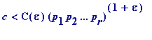
where 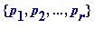 are the distinct prime factors of a , b and c .
Granville and Tucker note it has been conjectured (by whom?) that the
abc
-conjecture holds good with
 = 1 and
C
= 1, which would give
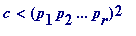
.
= 1 and
C
= 1, which would give
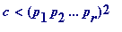
.
By way of illustrating the power of the latter form of the conjecture I will show that the only solutions of 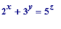 in natural numbers x , y and z would be (1, 1, 1) and (4, 2, 2).
First, though, my reader may wish to see some factored values of ( 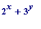 ), with x and y varying over a small range of values. Note the near miss at x = 8, y = 6, where ones sees that 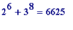 = 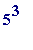 *53.
Other similar near misses are 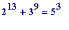 *223, 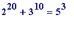 *8861, 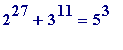 *1075159, 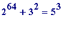 *(an 18-digit prime), 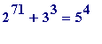 *(a 19-digit prime).
>
for x from 6 to 8 do
for y from 6 to 8 do
print(x, y, ifactor(2^x + 3^y))
od od:
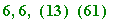
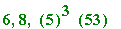
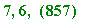
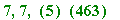
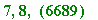
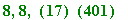
>
Applying the
conjectured
 = 1,
C
= 1 form of the the
abc
-conjecture to hypothetical solutions of
would give
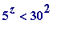
('30' being 2*3*5), and so
z
could only be 1, 2, or 3. Then (
x
,
y
,
z
) = (1, 1, 1) and (4, 2, 2) would be the only solutions. (You probably want to ask me...)
= 1,
C
= 1 form of the the
abc
-conjecture to hypothetical solutions of
would give
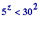
('30' being 2*3*5), and so
z
could only be 1, 2, or 3. Then (
x
,
y
,
z
) = (1, 1, 1) and (4, 2, 2) would be the only solutions. (You probably want to ask me...)
__________________
Finally, my reader may be interested in a theorem of mine which looks as though it ought to be a consequence of the abc -conjecture, but isn't (I leave it as an exercise to see that my theorem isn't a consequence of abc ).
Theorem (motivated by reflecting on Euclid's proof of the infinitude of primes, MAA Monthly, Vol. 96, No. 4, April 1989). Let 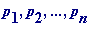 be the first n prime numbers, let 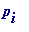 be any one of those primes, and let 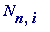 be the product of those n primes, with omitted; then
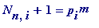
is impossible for . (Note, for n = 3 and i = 1, that 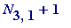 = 3*5+ 1 = 16 = .)
Also, 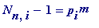 is impossible for . (Note, for n = 3 and i = 2, that 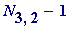 = 2*5 - 1 = 9 = 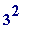 .)
A numerical illustration for the case n = 15:
>
n := 15: N[n] := product(ithprime(m), m=1..n):
for i to n do
N[n, i] := product(ithprime(m), m=1..n)/ithprime(i)
od:
for i to n do
[ithprime(i), ifactor(N[n, i] + 1), ifactor(N[n, i] - 1)]
od;
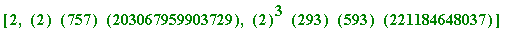

>